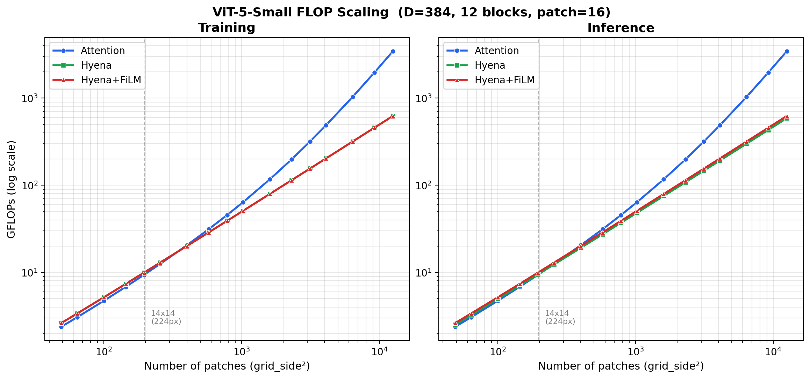

Benchmarks#
Throughput numbers and FLOP scaling. The
tables below are included verbatim from the
benchmarks/README.md
single-source — edits should land there, not here.
FLOP scaling#

See benchmarks/compare_flops.py
for the script that produced the plot.
ViT-5-Small throughput#
Single-GPU and multi-GPU (8x H100 SXM 80GB) throughput benchmarks for ViT-5-Small (22M params, 224x224 input, batch size 256, BF16).
Single-GPU Model Throughput#
Pure model throughput (synthetic data, no data loading overhead):
Configuration |
Time/step (ms) |
Throughput (samples/sec) |
MFU |
|---|---|---|---|
Before optimizations |
|||
Eager (original) |
159.2 |
1,608 |
4.6% |
torch.compile (default) |
46.0 |
5,560 |
15.9% |
torch.compile (max-autotune) |
CRASH |
— |
— |
After optimizations |
|||
Eager (optimized) |
111.1 |
2,305 |
6.6% |
torch.compile (default) |
33.2 |
7,716 |
22.0% |
torch.compile (max-autotune) |
32.0 |
8,003 |
22.9% |
Theoretical maximum: ~34,800 samples/sec (100% MFU on H100 SXM @ 989 TFLOPS BF16).
Multi-GPU DDP Training Throughput (8x H100)#
End-to-end training throughput including data loading, augmentations, compute, and DDP allreduce:
Version |
Dataloader |
Storage |
it/s |
ms/step |
Speedup |
|---|---|---|---|---|---|
CPU baseline |
torchvision |
Network FS |
~2.5 |
~400 |
1.0x |
v1 (DALI) |
DALI |
Network FS |
5.3 |
189 |
2.1x |
v2 (DALI optimized) |
DALI + compiled aug |
Network FS |
6.3 |
159 |
2.5x |
optimized_plus |
DALI + compiled aug |
Local NVMe |
12.1 |
83 |
4.8x |
fused |
DALI (all aug in pipeline) |
Local NVMe |
12.6 |
79 |
5.0x |
Step breakdown (fused DALI, NVMe, compiled)#
Component |
Time (ms) |
% of step |
|---|---|---|
DALI fetch |
~2 |
3% |
Mixup/CutMix + permute |
0.35 |
0.5% |
Forward + Backward |
~66 |
94% |
Optimizer (FusedLAMB) |
~2 |
3% |
After fusing all augmentations into the DALI pipeline and staging data on NVMe, the pipeline is fully compute-bound. Data loading accounts for <3% of step time.
Fused vs optimized DALI (DDP x8, profiling script)#
Pipeline |
Model |
Full step (ms) |
Agg throughput (img/s) |
Speedup |
|---|---|---|---|---|
DALI-optimized |
Small |
80.6 |
25,401 |
— |
DALI-fused |
Small |
70.4 |
29,103 |
+15% |
DALI-optimized |
Base |
131.1 |
15,622 |
— |
DALI-fused |
Base |
120.8 |
16,950 |
+9% |
What Changed#
Model optimizations (vit5_attention.py)#
RoPE precomputation — Replaced per-forward dict-based RoPE cache with
register_bufferfor precomputed cos/sin. Eliminates graph breaks, enables CUDA Graphs, and removes redundantrearrange/torch.catops per step.SDPA backend auto-selection — Removed explicit
SDPBackend.FLASH_ATTENTIONpreference. PyTorch now auto-selects the fastest backend (CuDNN on H100).Removed redundant dtype casts — Eliminated
.to(torch.bfloat16)/.to(in_dtype)around SDPA calls. Autocast handles precision.QuACK fused RMSNorm —
quack.rmsnormreplaces the manual float32-upcast-then-downcast RMSNorm with a single fused Triton kernel.
Optimizer#
Apex FusedLAMB — Multi-tensor fused LAMB optimizer replaces
torch_optimizer.Lamb. Batches all parameter updates into 1-2 kernel launches.
Compilation#
torch.compilesupport — Addedcompileandcompile_modeconfig flags. The RoPE buffer refactoring (item 1) was required to unblockmax-autotunemode, which previously crashed with CUDA Graph errors.
Data loading pipeline#
NVIDIA DALI — GPU-pipelined JPEG decode + crop + flip, replacing torchvision CPU pipeline.
Fused DALI augmentations — ThreeAugment, ColorJitter, and normalization moved entirely into the DALI pipeline using
enable_conditionals=True. Eliminates ~25ms of serial GPU augmentation per step.Local NVMe staging —
prepare_data()copies ImageNet to node-local/scratchwith sentinel-based idempotency. Eliminates cross-rank I/O variance that caused DDP allreduce stalls on shared FS.Training recipe tuning — Validation every 4 epochs (not every epoch), 12 workers, prefetch_factor=3.
FLOP Analysis#
ViT-5-Small per-sample FLOPs (12 blocks, dim 384, 6 heads, 201 tokens):
Component |
GFLOPs (fwd) |
|---|---|
Patch embed |
0.06 |
Attention (QKV + proj) |
5.72 |
Attention (softmax) |
0.12 |
MLP |
5.72 |
Head |
0.001 |
Total (fwd) |
11.6 |
Total (train: fwd + 2x bwd) |
34.9 |
Benchmark & Profiling Scripts#
Script |
Purpose |
|---|---|
|
Original model eager throughput + FLOPs/MFU calculation |
|
Eager vs torch.compile (default) vs max-autotune + profiler |
|
Single-step CUDA kernel profiling (top-30 by time) |
|
Correctness checks + throughput for the optimized model |
|
Single-GPU component profiling (data / compute / optimizer) |
|
Per-phase step breakdown with CUDA events (data / fwd / bwd / optim) |
|
DALI fused pipeline correctness verification |
|
Checkpoint validation against W&B metrics |
Running#
Submit via SLURM (from the repo root):
sbatch benchmarks/vit5_imagenet/bench_optimized.sh
sbatch benchmarks/vit5_imagenet/bench_compile.sh
sbatch benchmarks/vit5_imagenet/bench_profile.sh
Logs go to logs/.
Environment#
GPU: NVIDIA H100 SXM 80GB
PyTorch 2.6.0+cu129
CUDA 12.9
Apex 0.1 (FusedLAMB)
QuACK 0.2.10 (fused RMSNorm)
NVIDIA DALI 1.53.0
PyTorch Lightning 2.6.1